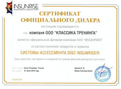
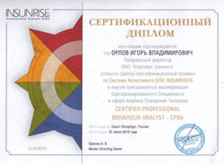

Тестирование с использованием методики DISC.
DISC INSUNRISE® – прямой производитель и провайдер!
DISC INSUNRISE Ltd. – компания, работающая на международном уровне, является разработчиком и прямым производителем высокоточных практических инструментов ассессмента на базе широко распространенной в мире методики DISC, применяющихся для комплексной работы с персоналом организаций.
Точный анализ, применимые на практике рекомендации!
Спектр профессионального применения инструментов DISC INSUNRISE отличается широтой и охватывает следующие потребности компаний:
- проведение ассессмента сотрудников;
- подбор, адаптация и развитие персонала;
- внутрикадровые ротации;
- создание эффективных команд и внутреннего резерва
- стресс-менеджмент и предупреждение конфликтов.
DISC INSUNRISE® – коммерческая целесообразность!
Деятельность компании направлена на увеличение самоотдачи людей и коллективов через применение интерактивных инструментов DISC и других современных обучающих и оценочных методик в условиях, когда клиенты хотят получать все более высокие результаты, затрачивая при этом меньше средств.
Инструментарий DISC INSUNRISE®:
- не требует установки ПО на Ваш компьютер;
- включает разные версии для решения профессиональных задач;
- доступен 24 часа в сутки 7 дней в неделю в режиме on-line;
- всего 10 минут на получение точного, развернутого результата;
- готов к применению;
- понятен не только специалистам.
Возможности системы ассессмента DISC INSUNRISE:
- Система ASDI имеет в своем арсенале более 40 тематических глав, подразделяемых на 3 основных типа: текстовые, шкальные и графические.
- ASDI измеряет более 200 компетенций, покрывающих запросы практически любой компании. Шкалы (компетенции) входят в состав тематических шкальных глав, доступных для пользователей.
- В Системе Асcессмента DISC INSUNRISE имеется 2 глобальных инструмента представленных целой серией различных тематических отчетов. Первый инструмент измеряет поведение и компетенции Сотрудников, второй - точно и по тем же параметрам и критериям описывает Должности.
- Система Ассессмента DISC INSUNRISE - ASDI генерирует как фиксированные отчеты, Вы можете ознакомиться с некоторыми из них на сайте insunrise.ru, так и эксклюзивные.
Эта опция подразумевает так называемый конструктор отчетов - возможность заказывать отчеты практически любой конфигурации, собирая их из обширного списка глав текстовых, шкальных и графических.
Об инструменте профильный анализ должности нужно сказать отдельно. Речь идет о рекрутинге, адаптации, соответствии должности, направлении коррекции усилий и т.п.
Естественно, что оба инструмента пересекаются. То есть профиль сотрудника легко сопоставим с профилем должности, т.к. они составляются по единым критериям, в единой терминологии, понятной неспециалистам.
Например, если Должность требует проявления той или иной компетенции на 7,0 баллов, а кандидат проявляет ее на 2,5 - мы можем сделать соотв. выводы о развитии или несоответствии.
DISC прост, удобен и точен в смысле подбора, адаптации и выявления зон развития. Поэтому им пользуются профессиональные рекрутинговые компании вроде Анкора, Бойдена, Kelly и других.
Чтобы узнать о методике больше и пройти ознакомительное тестирование, обратитесь к нашему региональному дилеру ООО «Классика тренинга».
 {kind=link}
{kind=link}
Ген. Директор ООО «Классика тренинга»: Орлов Игорь Владимирович
e-mail: training67@yandex.ru
тел: +7-910-783-14-31